Vocals Plugin is a complete vocal studio channel: a microphone modeler, seven preamps, an optical leveler and a rack of eight effects. Pick a preset and the difference is immediate.
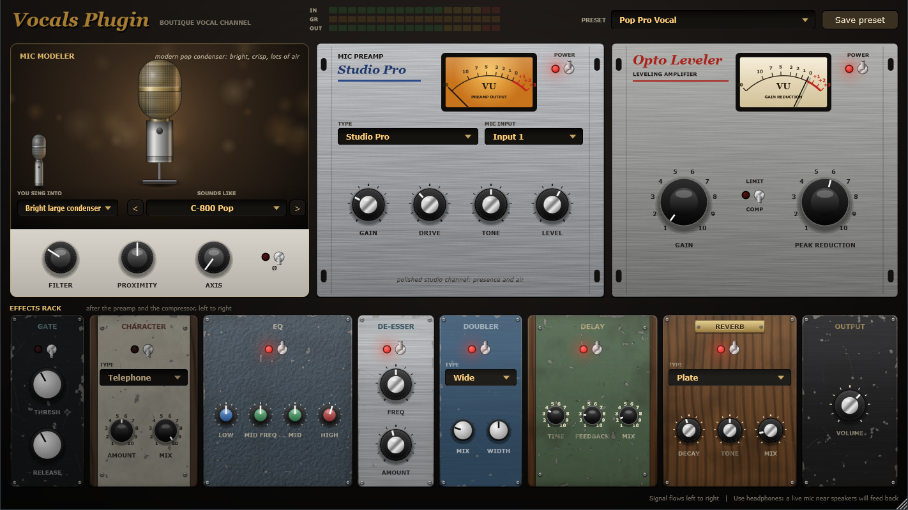
Tell Vocals Plugin what kind of mic you sing into. It takes away that mic's colour, then adds the colour of the one you pick. Proximity and axis controls let you move closer or sing off to the side.
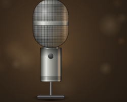
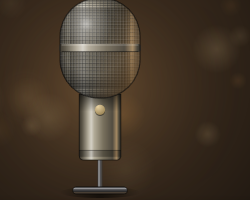
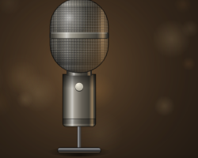
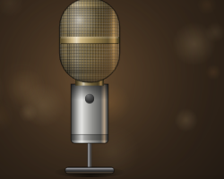
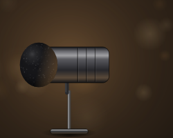
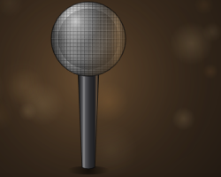
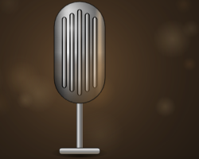
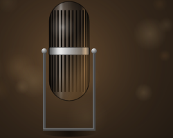
All models play at the same loudness, so switching between them changes the tone, not the volume. They are original simulations inspired by classic studio microphones, with original names.
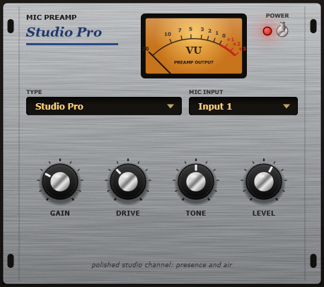
Seven characters, from transparent to fully distorted. DRIVE adds saturation without making it much louder, and the amber VU meter follows the preamp's output.
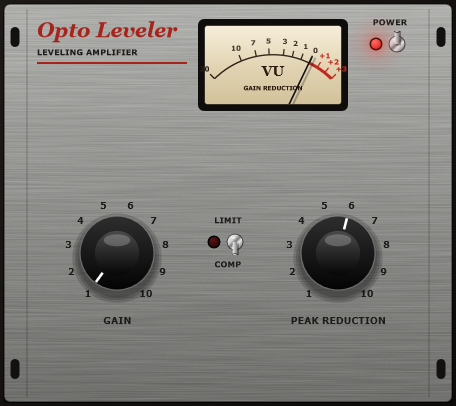
An optical-style compressor with two knobs. Its release slows down after long, loud phrases, so your voice stays even without pumping. Switch to LIMIT for shouting and screaming.
Anodised metal, painted steel, oak and walnut. Some units look brand new and some look well used. The signal flows from left to right.
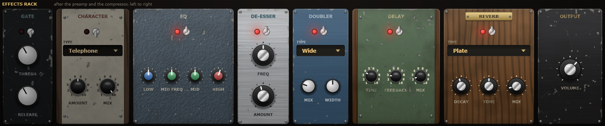
Every preset is set to the same loudness, so you hear the difference between them, not just a change in volume. Save your own vocal chains alongside them.
C-800 Pop, Studio Pro, doubler and plate reverb: bright modern pop.
Run VocalsPlugin-1.0.2-Setup.exe from the latest release and choose the app, the VST3 plugin or both.
Open Vocals Plugin from the Start menu, then Options → Audio/MIDI Settings. Choose your interface, put on headphones and untick Mute audio input.
The installer puts it in the standard VST3 folder. Rescan plugins in your DAW and put it on a vocal track.
Windows 10 or 11 (64-bit), a microphone and an audio interface. Condenser mics need phantom power (48V).
The app isn't code-signed. Click More info → Run anyway.
In the standalone app choose Windows Audio (Low Latency Mode). In a DAW, use your interface's ASIO driver. The plugin itself adds 3 samples.
Fully offline: no account, no telemetry, no network access. Your presets live in Documents\Vocals Plugin Presets.